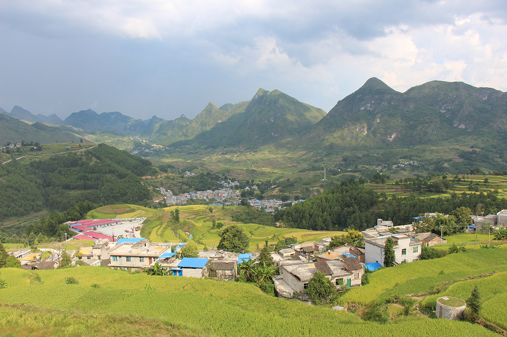
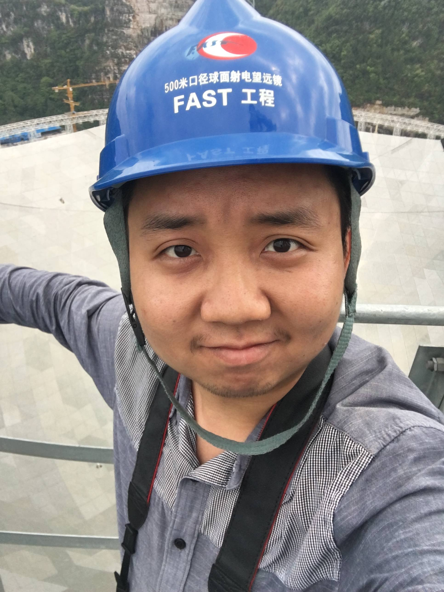
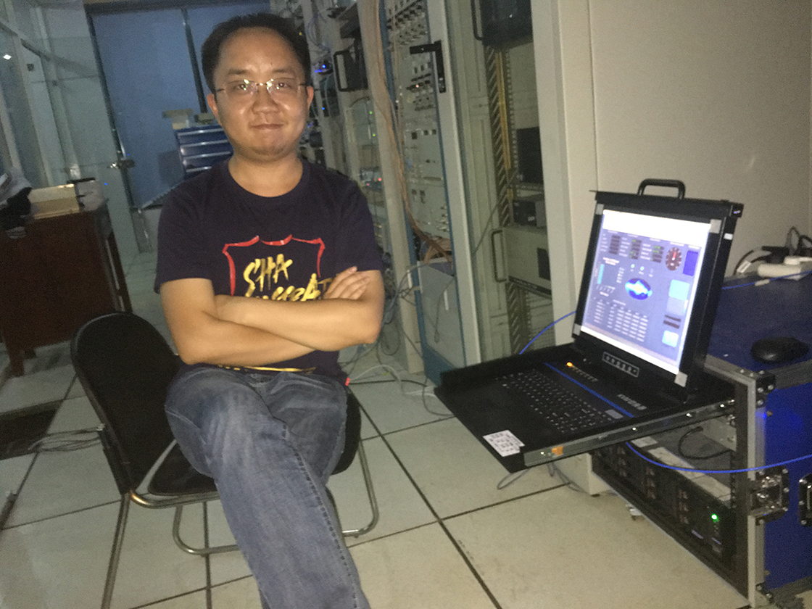

About Me
Dear friends, welcome to my personoal webpage! My name is Rui Luo (罗睿), I was born in Moyang Town (沫阳镇), Luodian County (罗甸县), Guizhou Province (贵州省), China. My hometown is Dongdang (董当乡), which is a small but very beautiful village (as the picture below shown). It is merely ten miles away from the Five-hundred-meter Aperture Spherical radio Telescope (FAST). I grew up in Luodian, a small county located in South Guizhou.

I am now a postdoctoral fellow at CSIRO Astronomy and Space Science (CASS) and Australia Telescope National Facility (ATNF). I’m working on how to make anomaly detections in the high-time resolution big data. Before I moved to Australia, I received my Ph.D. at Peking University (PKU) in 2019. My Ph.D. research projects concentrate on a new astronomical phenomenon named Fast Radio Burst (FRB), including theoretical, observational and statistical aspects. My doctoral disseration is Measurement of the luminosity function of Fast Radio Bursts.
 